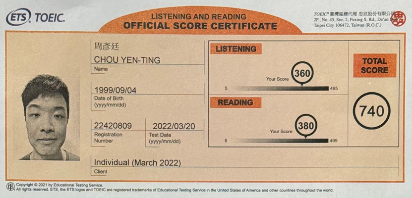
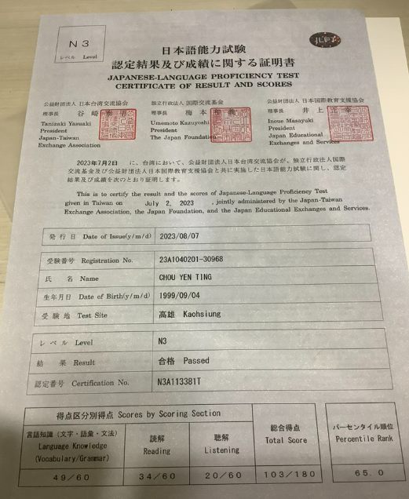
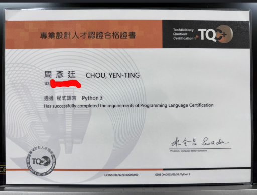
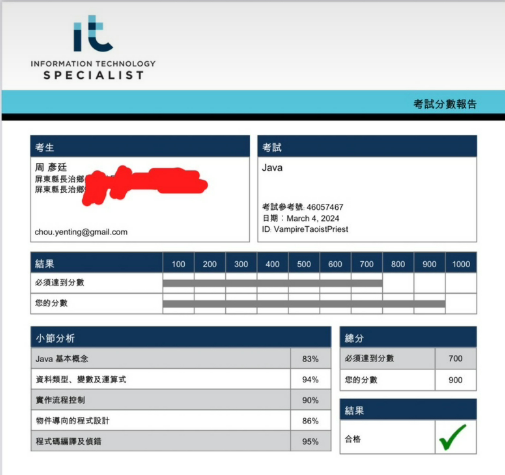
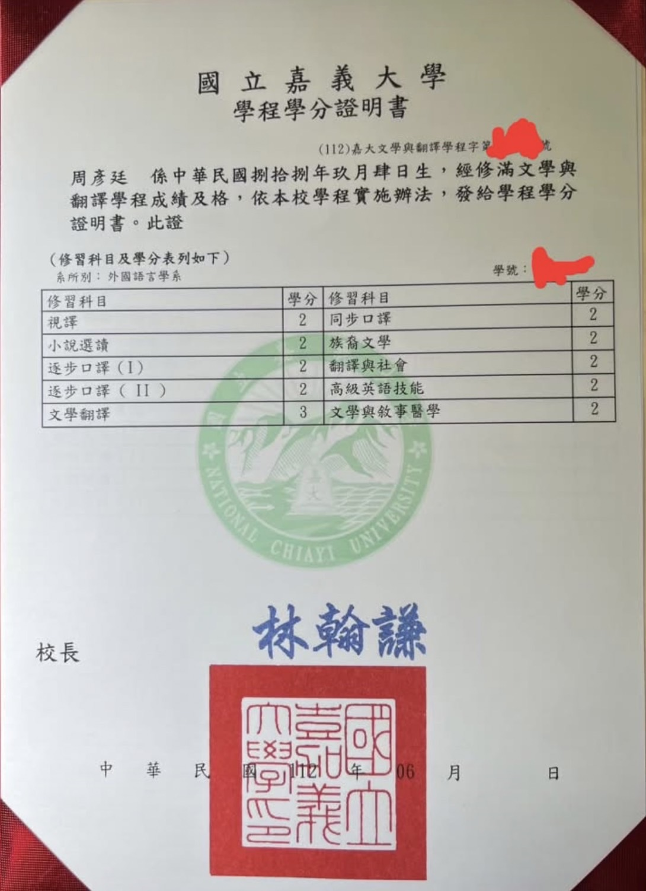
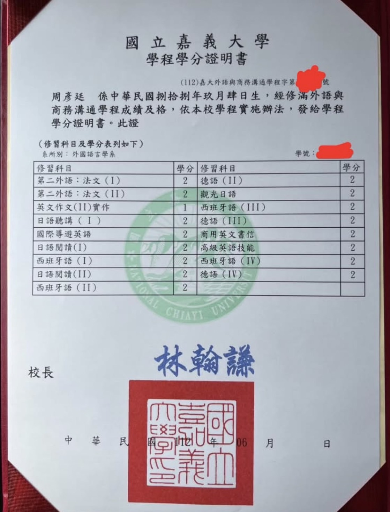

🎓 學歷 Education
-
逢甲大學 資訊工程學系 學士後專班
2025 年 2 月 – 至今
-
國立嘉義大學 外國語言學系（應用外語組）– 學士
2020 年 9 月 – 2023 年 6 月
-
國立臺灣海洋大學 電機工程學系（肄業）
2018 年 9 月 – 2020 年 2 月
💻 技術經歷 Technical Experience
-
恆逸教育訓練中心 – Java 全端工程師課程（2024年3月7日 - 2024年7月1日）
後端：Java、Java Servlet、JSP
前端：HTML、CSS、JavaScript
資料庫：MySQL
說明：了解 Client–Server 架構，熟悉 Servlet 與 JSP 協作流程（MVC 初階概念）
-
逢甲大學 – 資訊工程學系學士後專班（現就讀）
後端：Java、Spring Boot（IntelliJ IDEA）
前端：Vue 3、Vite、Pinia（WebStorm）
資料庫：Supabase（PostgreSQL）
測試與除錯：JUnit 單元測試
前端技術：RWD 響應式設計
部署：GitHub Pages
說明：具備前後端分離、RESTful API 建置能力，能完成開發 → 測試 → 佈署全流程
📜 證照 Certifications
- TOEIC 740

- JLPT N3

- TQC+ Python

- ITS Java

語言能力 Languages
- 中文：母語，能流暢進行所有溝通與書寫
- 英文：TOEIC 740
— 能有效閱讀技術文件、理解英文教學內容，具備基本職場溝通與協作能力
- 日文：JLPT N3
— 能進行日常對話，理解常見網站 UI 與基礎技術內容
📜 大學畢業證書 Bachelor's Degree Certificate


汽車駕照（自排）
普通重型機車駕照
🛠️ 技能 Skills
💡 程式語言 Programming
- Java（主力）
- Python
- JavaScript
🖥️ 後端 Back-End
- Spring Boot
- Java Servlet
- JSP
- RESTful API
- JUnit 單元測試
🌐 前端 Front-End
- Vue 3 / Vite / Pinia
- HTML / CSS / JavaScript
- RWD 響應式設計
📊 資料庫 Databases
- PostgreSQL（Supabase）
- MySQL
🛠️ 工具 Tools
- IntelliJ IDEA（後端）
- WebStorm（前端）
- Git & GitHub
- GitHub Pages 部署
🤝 軟技能 Soft Skills
- 跨領域學習能力
- 團隊合作與溝通
- 問題解決能力
- 自主學習
🌐 全端實戰作品 Full-Stack E-commerce Project
-
外語學習**實體書**商城 (Language Learning Book Platform)
[開發中 - In Development]
**技術棧：** Java (Spring Boot, Spring Security, JPA) / Vue.js 3 (Vite, Pinia, Vue Router)
**專案特色與架構：** 專注於外語學習書籍市場，採用前後端分離架構。核心程式碼已完成編寫，旨在實作**高可靠性**的電子商務核心業務流程。
-
**高可靠性事務處理：** 實現**原子結帳事務 (ACID Transaction)**，確保在多用戶操作下，**實體書庫存能被精確、安全地扣減**，避免超賣問題。
-
**高效查詢與篩選：** 後端支持**按學習語言分類**、多條件組合的動態搜尋；前端利用 Vue.js 實現快速、響應式的內容展示與關鍵字搜尋。
-
**安全與授權管理：** 後端採用 Spring Security 結合 **JWT (JSON Web Token)** 實現 API 無狀態認證；前端透過 Pinia Store 管理 Auth 狀態並實作 Vue Router 守衛，嚴格控制 **Admin/Member 權限分級**。
-
**架構與整合：** 採用服務層分離設計 (Service Layer)，並通過 **Axios 封裝**，實現 Vue/Pinia 與 Spring Boot RESTful API 的穩定通信。
📂 前端作品集 Front-End Projects
-
日文教學與即時測驗網站 (15 頁)
**技術棧：** HTML / CSS / 原生 JavaScript
- **漢堡選單：** 首頁提供漢堡選單，既節省空間也能讓人一眼看出內容導覽在哪。與此同時，有採用響應式設計的其他頁面透過手機瀏覽時其導覽列也會變成漢堡選單，以展現我操作原生 JS 處理動畫效果的能力。
- **響應式設計：** 不少頁面採取響應式設計，以應對不同尺寸的設備。
- **錨點導航技術：** 內容較多的頁面有附目錄並提供錨點導航的功能，使瀏覽者能直接快速進到他們感興趣的主題閱讀。
- **原生 JS 互動邏輯：** 部分頁面使用純 JavaScript 實作**即時測驗邏輯**（如：答案驗證、分數計算）、**發音控制**、**輸入框關鍵字搜尋**等複雜功能模組。
-
**服務整合與國際化：** 整合 **Google Translate API** 實現多語言翻譯功能，並使用原生 JS 實作 **Facebook、Line、X (Twitter) 的 URL 動態分享**功能。
-
**社群互動與 SDK 整合：** 成功整合 **Facebook Comments SDK**，實現社群評論區功能，支援**使用者生成內容 (UGC)** 互動。
- **內容與教育性：** 分享日文 N3 學習過程、語法與單字知識，展現強大的資訊整理和知識轉化能力。
- **設計考量：** 為了確保在特定設備上閱讀和學習的最佳體驗，部分內容採非響應式設計，以保持句子排版的穩定性。
-
樂器演奏與數位樂器分析網站 (13 頁)
**技術棧：** HTML / CSS / 原生 JavaScript
- **漢堡選單：** 首頁提供漢堡選單，既節省空間也能讓人一眼看出這就是首頁典型的模樣。通過這種手法，我向瀏覽者展現我使用原生 JS 處理動畫效果的能力也讓瀏覽者知道我有清晰的網頁設計概念。
-
**前端架構思維：** 專門撰文對比傳統 **多頁面 HTML** 與 **Vue.js (SPA/組件化)** 的結構差異，證明具備從多頁面轉向框架架構的理解力。
-
**國際化：** 整合 **Google Translate API** 實現多語言翻譯功能。
-
**社群互動與 SDK 整合：** 成功整合 **Facebook Comments SDK**，實現社群評論區功能，支援**使用者生成內容 (UGC)** 互動。
-
**原生 JS 數據操作：** 實作了純 JavaScript **下拉式選單 (Dropdown) 內容過濾功能**，展現原生 JS 處理動態數據切換的能力。
-
**技術分析與性能探討：** 深入探討數位樂器 App 在手機上的**畫面與聲音不連貫**等性能問題，包含應用程式開發技術介紹與音效設計原理。
-
世界人種分布與**二次元設計分析**網站 (7 頁)
**技術棧：** HTML / CSS / 原生 JavaScript
-
**互動式資料展示：** 使用原生 JavaScript 實作**點擊/懸停互動資訊卡片** (`showInfo` function)，動態展示角色的背景、族裔及**設計策略**。
-
**國際化：** 整合 **Google Translate API** 實現多語言翻譯功能。
-
**社群互動與 SDK 整合：** 成功整合 **Facebook Comments SDK**，實現社群評論區功能，支援**使用者生成內容 (UGC)** 互動。
-
**跨文化設計分析：** 系統性分析日系動畫和遊戲中，歐裔角色常被設計成金髮碧眼的**市場與視覺策略**，並與現實中多樣化的黑髮高加索人進行對比。
-
**技術細節探討：** 深入分析在不同媒介（如早期像素遊戲、動畫、3D 建模）中，角色髮色和眼色因**色板限制、光影渲染、畫師風格**等技術因素產生的視覺差異。
- **錨點導航技術：** 主題分明的另一個頁面（名為世界人種分布與歷史原因）有附目錄並提供錨點導航的功能，使瀏覽者能直接快速進到他們感興趣的主題閱讀。
-
實用與虛構武器科普與**數據分析**網站 (5 頁)
**技術棧：** HTML / CSS / 原生 JavaScript / **Chart.js**
- **錨點導航技術：** 內容較多的頁面有附目錄並提供錨點導航的功能，使瀏覽者能直接快速進到他們感興趣的主題閱讀。
-
**數據視覺化應用：** 使用 **Chart.js 實作雷達圖 (Radar Chart)**，量化並對比多種兵器的「視覺帥度」與「實用性」，以數據分析作為結論支撐。
-
**國際化：** 整合 **Google Translate API** 實現多語言翻譯功能。
-
**社群互動與 SDK 整合：** 成功整合 **Facebook Comments SDK**，實現社群評論區功能，支援**使用者生成內容 (UGC)** 互動。
-
**跨領域深度分析：** 結合歷史（青龍偃月刀）、遊戲機制（實戰平衡）和特攝片製作安全考量（鈍器道具），深入剖析武器設計在不同領域的邏輯差異。
-
**豐富媒體整合：** 成功整合多個來源（YouTube、Bilibili、本地影片）的影音內容，強化文章論點並提升閱讀體驗。
-
吸血鬼和中國殭屍文化分析與**體制衝撞研究**網站 (15 頁)
**技術棧：** HTML / CSS / 原生 JavaScript / **Chart.js**
- **錨點導航技術：** 內容較多的頁面有附目錄並提供錨點導航的功能，使瀏覽者能直接快速進到他們感興趣的主題閱讀。
-
**複雜資料結構化：** 透過建立表格對比**台灣與美國教育體制**的差異，並深入探討吸血鬼在其中面臨的**身份暴露風險**與**物理能力限制**。
-
**國際化：** 整合 **Google Translate API** 實現多語言翻譯功能。
-
**社群互動與 SDK 整合：** 成功整合 **Facebook Comments SDK**，實現社群評論區功能，支援**使用者生成內容 (UGC)** 互動。
-
**數據推算與論證：** 根據影視劇畫面，**推算角色的物理能力**（如：奔跑速度與無負重跳躍距離），將虛構設定與現實物理邏輯結合分析。
-
**數據視覺化潛力：** 專案已整合 **Chart.js** 程式碼（可運用於角色能力、屬性等數據比較圖），並具備大量影音內容整合，展現強大的**多媒體應用與呈現能力**（此圖表在介紹中國殭屍的等級的頁面）。